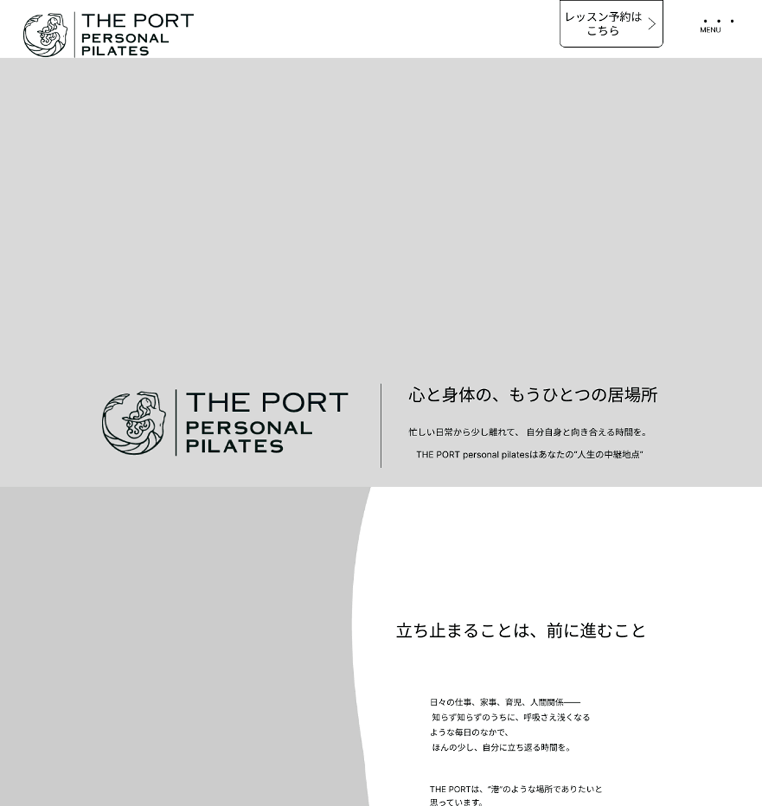
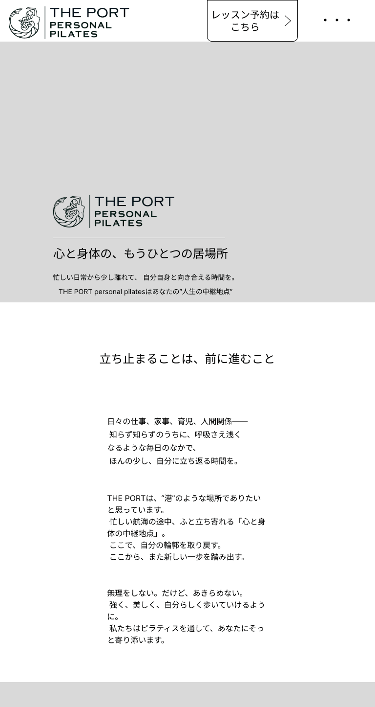
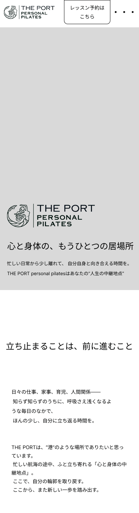
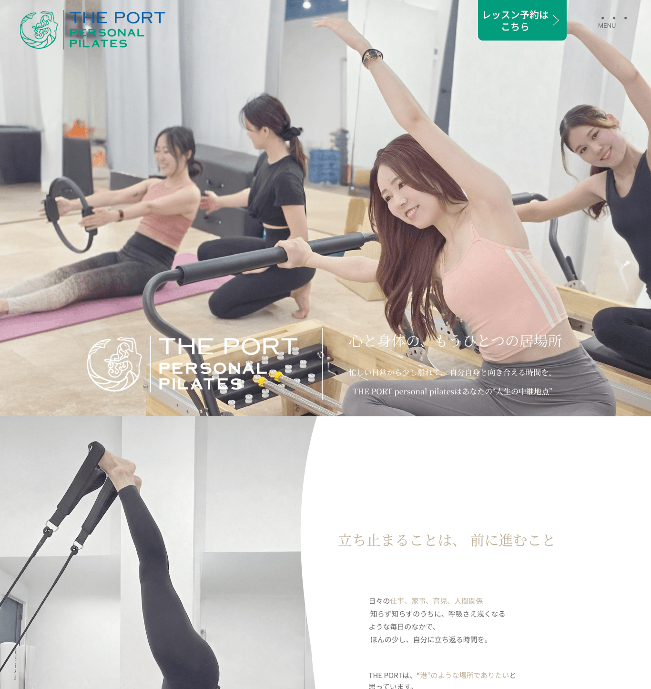
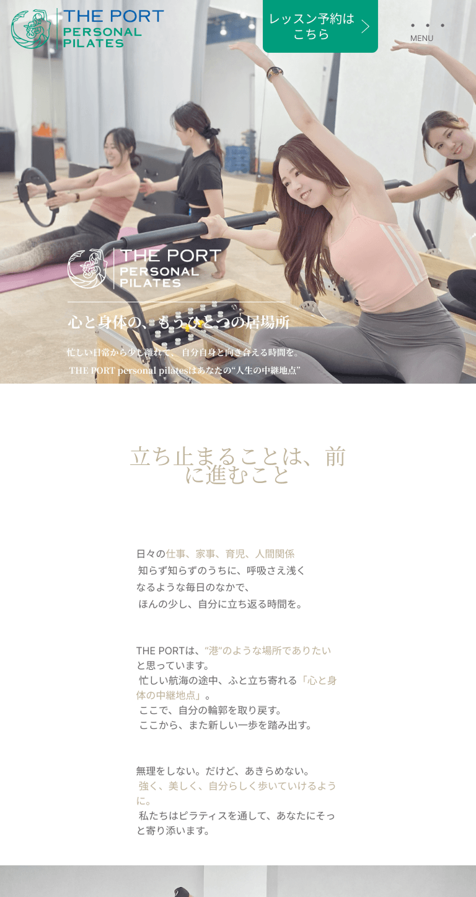
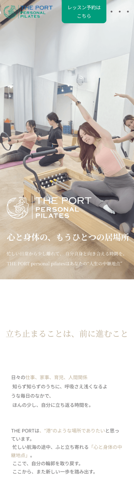
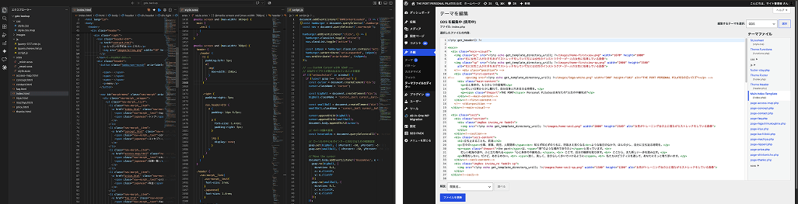

情報設計からデザイン、実装までの制作プロセスを紹介します。
「誰に、何を、どう伝えるか」を軸に、ユーザー視点で最適な形を設計しています。

01
課題整理
BRIEF
ターゲットや競合の調査を行い、ユーザーの悩みやニーズを整理。LPの目的とゴールを明確にしました。
GOAL
体験レッスンの予約数を増やす
02
情報設計
WIREFRAME
ユーザーの行動を想定し、情報の優先順位と導線を設計。Figmaでワイヤーフレームを作成しました。



03
デザイン
DESIGN
情報設計をもとに、目的に適した視覚表現へ落とし込みます。
TYPOGRAPHY
Noto Serif JP
Lustria



04
実装
DEVELOPMENT
HTML / SCSS / JavaScript / jQueryを用いて実装。各デバイスに適したレスポンシブ対応を行い、デザインの意図を忠実に再現します。

- レスポンシブ対応（SP / TB / PC）
- アニメーション実装
- お問い合わせフォーム実装
- WordPress オリジナルテーマで構築
05
工夫した点
REFLECTION
ユーザー視点を常に意識し、情報の見せ方や導線設計にこだわりました。
共感を生むコピー設計
ユーザーの悩みに寄り添うコピーで、自分ごと化しやすい構成に。
迷わない導線設計
CTAを複数箇所に配置し、どの位置からでも予約につながるように設計。
スマホでの見やすさ
モバイルファーストで設計し、スマホでも快適に閲覧できるレイアウトに。